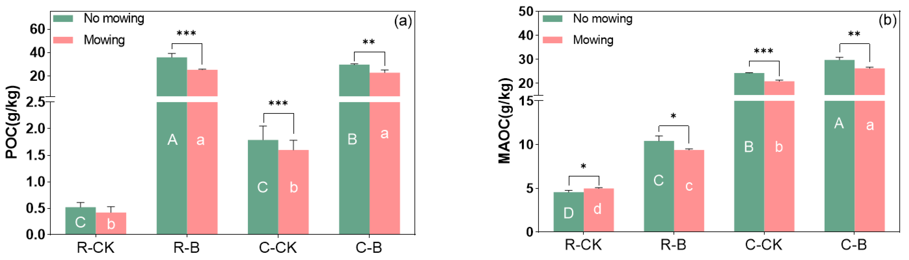
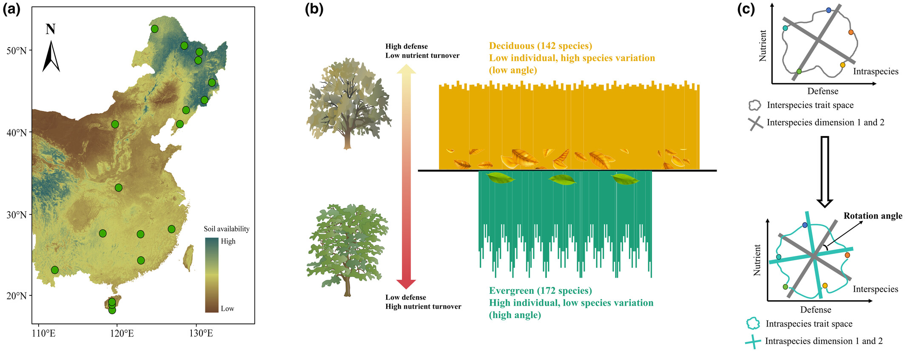
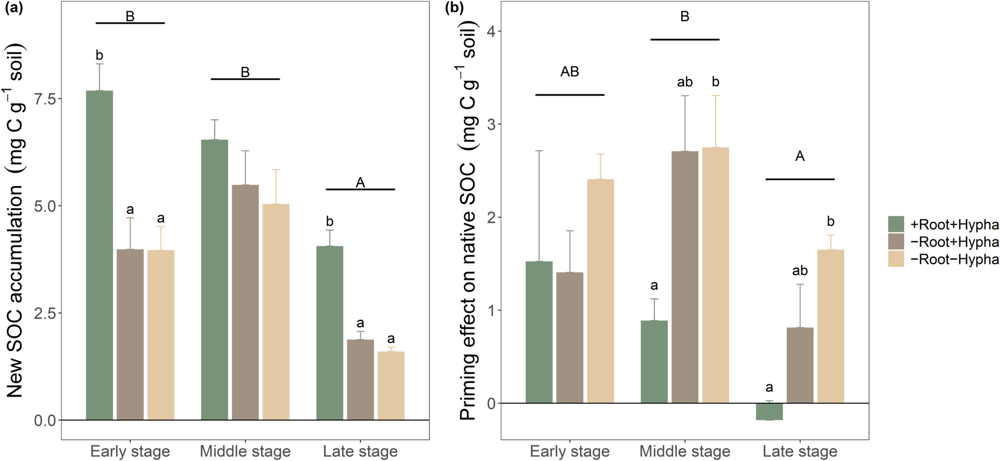
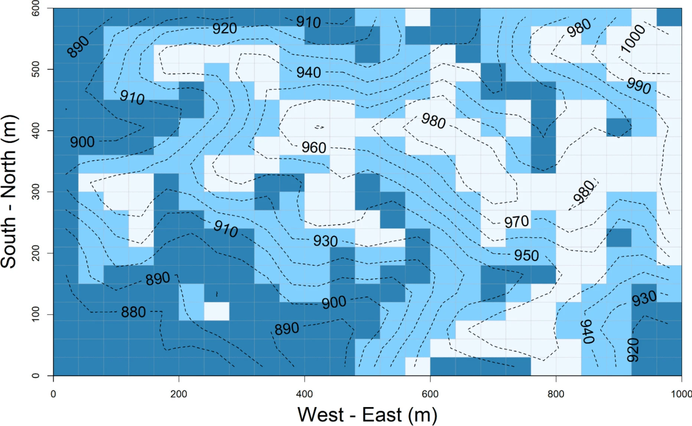
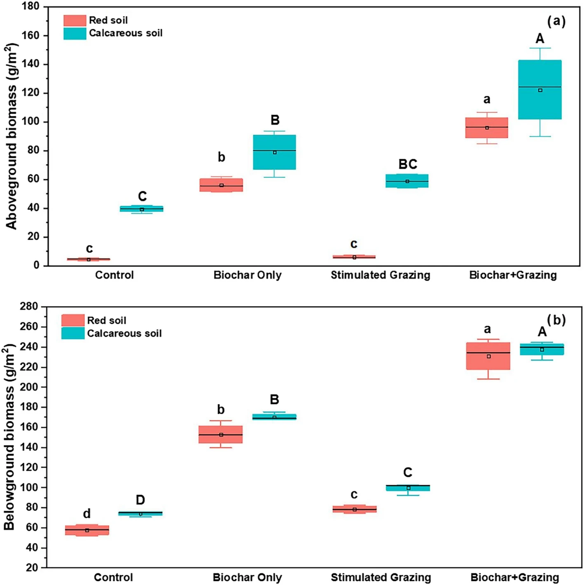
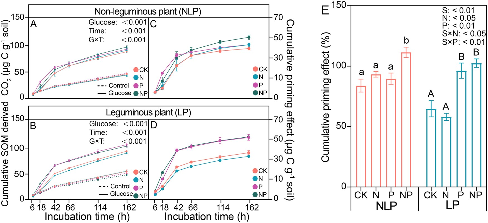
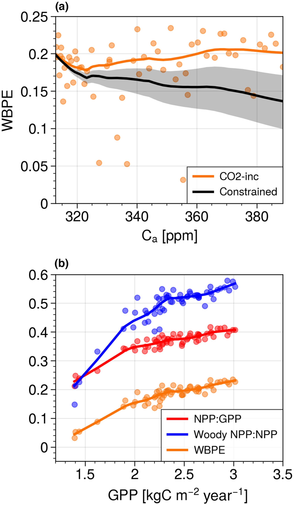

This body of work investigates how soil microbial communities drive organic carbon accumulation and nutrient dynamics across tropical forest succession, land-use change, and biogeochemical gradients — primarily in collaboration with the Z. Liu lab at the Chinese Academy of Sciences.
Key contributions include examining how roots dominate over extraradical hyphae in driving soil organic carbon during tropical forest succession (Global Change Biology), how biochar mediates carbon sequestration in karst and red soils, and how microbial controls shape soil priming effects under nutrient additions (The ISME Journal).
Additional work with X. Xu uses tropical tree rings to constrain long-term predictions of woody growth in earth system models.






